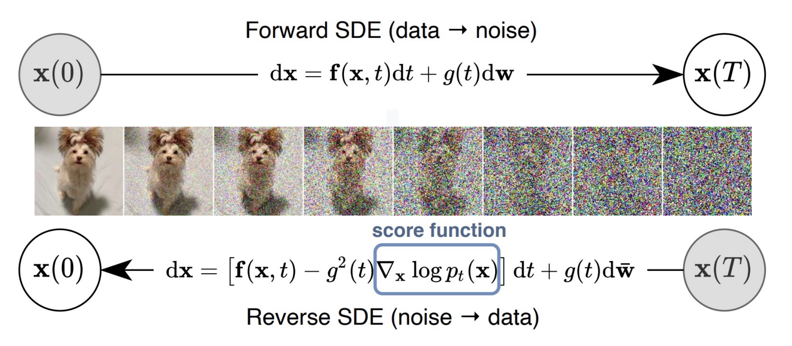

Score Based Methods#
While DDPM and DDIM use discrete-time formulations of the diffusion process, an alternative view models diffusion as a continuous-time stochastic differential equation (SDE).
Score Function#
(Stein) Score is the gradient of the log-likelihood function with respect to a data point:
Score of the conditional distribution \(q(x_t|x_0)\):
Relationship between \(\nabla_{x_t} \log q(x_t|x_0)\) and \(\epsilon_t\):
The noise predictor \(\hat\epsilon_\theta(x_t,t)\) can be interpreted as predicting the score \(\nabla_{x_t} \log q(x_t|x_0)\) up to a scaling factor.
Tweedie’s Formula gives an estimate of the true mean of a normal distribution from the samples drawn from it.
Applying Tweedie’s Formula for \(q(x_t|x_0)\), $\( \mathbb{E}[\mu|x] = x+ (1-\bar\alpha_t) \nabla_x \log q(x_t|x_0) = \sqrt{\bar\alpha_t}x_0 \)$
Langevin Dynamics#
Langevin dynamics enables sampling from a distribution when only the score function is known. Even without knowing \(q(x)\), if we have the score function \(\nabla_x \log q(x)\), we can sample the distribution \(q(x)\) using Langevin dynamics via following steps:
Initialize \(x \sim p_{prior}(x)\).
For \(T\) steps:
\[ x \leftarrow x + \eta \nabla_x \log q(x) + \sqrt{2\eta \epsilon}, \quad \epsilon\sim \mathcal{N}(0,\mathbf{I)}) \]It converges to \(q(x)\) when \(\eta \to 0\) and \(T\to\infty\). Note: only score information \( \nabla_{x}\log q(x)\) is used and not the distribution \(q(x)\) itself. Langevin Dynamics looks very similar to reverse process in DDPM.
Score Matching#
One possible way to encode the data distribution \(q(x)\) into a neural network is to train a score prediction network \(s_\theta(x)\) using the following loss function:
This is similar to noise prediction network.
Noise-Conditional Score-Based Model#
How do we compute \(\nabla_x \log q(x)\) when we only have samples of \(q(x)\)? Let \(q(x) =q(x_0)\). If we only have samples from \(q(x)\), we can approximate it using a mixture of Gaussians:
Now, the sampling from \(q(x_t)\) is the same as:
Sampling from \(q(x_0)\) (taking a random \(x_0\)) and then
Sampling from \(q(x_t|x_0)= \mathcal{N}(x_t; x_0, \sigma_t^2 \mathbf{I})\)
This is identical to loss function of DDPM, up to a scale.
How to choose the variance \(\sigma\) for Gaussian mixture models?#
For \(q(x_t) = \int q(x_0) \mathcal{N}(x_t; x_0, \sigma_t^2 \mathbf{I})dx\), Corresponding loss function: \( \mathbb{E}_{x_0\sim q(x_0)} \left[|| \nabla_{x_t} \log q(x_0) - s_\theta(x_t) ||^2 \right]\)
For small \(\sigma_t\), the score prediction is close to given data samples and hence it is more accurate in high-density regions, but poor generalization in low-density areas
Large \(\sigma_t\), may over-corrupt the original data distribution and may lead to noisy score predictions. Score prediction id better in low-density regions but adds excessive noise to high-density samples.
To select right \(\sigma\) Annealed Langevin Dynamics is used, where \(\sigma_t\) gradually decreases over time. Annealed Langevin Dynamics is similar to the reverse diffusion process.
The reverse of the annealed Langevin dynamics can be seen as a gradual data perturbation, which is the same as the forward diffusion process. In a continuous time domain, the data perturbation (forward) process is described by the following stochastic differential equation (SDE):
while its reverse process is also formulated as another stochastic differential equation:
where
\(f(x,t)\): Drift coefficient
\(g(t)\): diffusion coefficient
\(dw\): infinitesimal white noise (called Brownian motion)

DDPM is a specific discretization of the SDE formulations.
Issues Underlying Diffusion Models#
There are several challenges involved with diffusion models.
Inaccuracy of training. The training data is known to lie on a low-dimensional manifold. While training a diffusion modeling using score matching, it is hard to learn function with lipschitzness, specially neat \(t=0\).
Slow sampling. Sampling using a diffusion model is simulating a differential equation, where the quality of sample is inversely proportional to the step size used to simulate the differential equation. Several techniques based on higher-order gradients, adaptive step sizes, extrapolation for better approximation, and distillation networks to estimate the trajectory of the differential equation are used to make diffusion model faster.
Scalability to high-dimensional datasets
Reference#
Yang Song, Jascha Sohl-Dickstein, Diederik P Kingma, Abhishek Kumar, Stefano Ermon, and Ben Poole. Score-based generative modeling through stochastic differential equations. In International Conference on Learning Representations, 2021.